Analyzing Modern Malware Techniques - Part 4
I’m afraid of no packer(Part 1 of 2)

Preface:
If you’re going to analyze malware you are going to run into packers, code injections, obfuscated code and what not. If one doesn’t possess the correct knowledge or the correct tools to deal with such problems he will not get far with his analysis. In fact, when I first started practicing malware analysis somewhere back in 2015 I stopped because I couldn’t understand how to unpack packed code and I quit trying, So I tried again around 2017… and I quit again. This in time(in 2019) I didn’t quit but only because I had the proper tools to deal with the problem. Packed code is usually a dynamic problem and by that I mean that most of the time when you’ll encounter a packed malware it’s not going to be the same packed code but if you’ll have the tools to deal with the problem I guess you could defeat any packer. Still I’m to remain humble and admit that I still don’t have enough experience to deal with all types of packed code but I’m hoping that today, my dear reader, together we can bring more experience into our reverse engineering arsenal to learn together how to defeat packed code. I would like to put my efforts in this post to find anti analysis techniques that bypass my Scylla-Hide plugin and to learn how to de obfuscate binaries to ease analysis. Let’s begin!
Required knowledge:
- Basic understanding in code injections
- Basic understanding in dealing with anti analysis
- A solid grasp of C and WINAPI
- A solid grasp of x86 Assembly
- Experience with IDAPRO
- Experience with x64dbg
Required Tools:
- IDA Pro
- x64dbg
- Resource Hacker
- PEBear
- Process Explorer
- Process Monitor
- VMWare
Sample used:
3d2777b748e805c0463c0c6d0fef8280ad197bea1dd0a25e30ed71199989a6b9
Goal setting:
- Find and bypass anti analysis techniques.
- Unpack main payload so we could analyze and run it.
- Extract basic host based IOC and network based IOC.
Some side notes:
I highly encourage you to download the sample and follow my execution paths. As I begin to dive into shellcode analysis here it will be highly difficult to follow me in the post itself as I would begin to traverse offsets and I would not be making a picture of every location I access.
Basic Analysis:
I was encouraged by a few users in 0x00sec.org to check out this sample, It was stated that this sample was packed by SmokeLoader and it performs some pretty cool anti-analysis tricks, so off I went.
Basic Static Analysis:
Anti Analysis APIs:


Dynamic API Resolving:

Uncommon section in PE file:

And that’s it. That is very undetailed for hybrid-analysis. No connections being made, No files dropped, no code injection detection’s no nothing.
Let’s look at the sample on disk.
So I start off by viewing the Imports and the list seems pretty full and we have some strings which are well…:

Not very informative, the rest of the strings look like auto-generated by the compiler so it’s not much use to us.

TLS calls are never a good thing, TLS is Thread Local Storage, it’s code that is usually stored in a different section and runs before the entry point or it might be allocated and created using TLS API calls, but there is no TLS section in this binary. Just a strangely named section called .mysec which doesn’t contain any code:
but it contains a lot of storage, infact I viewed its full size and its 4095 bytes long. we’ll keep that in mind.
In addition, there is a strange artifact in the samples resource section:

It looks to long(35769 bytes long) to be a valid resource unless its a video format, we’ll keep this in mind as well.
Basic Dynamic Analysis:
So let’s run this on our Dynamic Analysis machine, I’ll set process monitor to watch the application and we’ll take a look at it in process explorer.
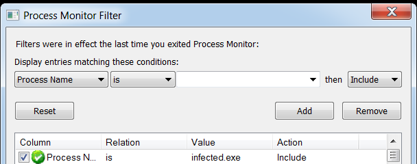


That’s not true actually, I’m not surprised at all. but we do have something interesting here - it appears that the sample spawned a new sub process:
which is a legitimate Windows Application, that might come in handy! so let’s move on to the advanced analysis!
Advanced Analysis - Finding Obfuscation and Anti Analysis Tricks:
Our goal here is to find obfuscation techniques and anti analysis techniques, I’m going to find ways to circumvent them, instead of skipping these like I usually do we’ll park at each technique we find and see how we can deal with it.
Before we continue, I want to mention that SmokeLoader is simply a loader aiding the main payload in covert launching. According to Hybrid Analysis that was linked before and Maltiverse, the final payload is ransomware(GandCrab according to Maltiverse).
Let’s start by looking at WinMain in IDA:
looking at loc_4011C5 we can see a lot of local variables being initialized:

and since I’ve already analyzed this malware a bit - I’m going to assume these are encrypted stack strings but we’ll see if this is true later on. Next up we got mambo jumbo code that is built to look confusing but legitimate. But wait! oh boy what’s this at location loc_4017F9:

A call to a dynamically calculated value and what appears to be an attempt to set a value in the Process Environment Block? What is at 0x2c being accessed from the FS register?
Huh… It’s attempting to access a value in the Thread Local Storage array(TLS), we’ll check that out too since we don’t know exactly what value it’s attempting to access since EDX is dynamically calculated.
After this the code block calls printf and terminates, I’m not sure this invocation actually does something.

So let’s summarize what we gathered so far:
- A shady looking resource
- A lot of local variables being set up that look like encrypted stack strings
- A call to a dynamically calculated pointer
- Dynamic access to the TLS array
Let’s start x64dbg and put a breakpoint on the assumed stack strings, and loc_4017F9. In addition just for safety let’s place a breakpoint on VirtualAlloc and CreateProcessW.
We break on the assumed stack strings at location 0x4011DE, now I’m going to access the dump pointed by these variables after I run the entire variable assignment block at loc_4011C5:

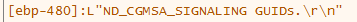
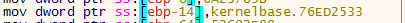
This is data, but I’m not sure all of it is data, we’ll see how this plays out later.
Next we hit on CreateProcessW which attempts to create splwow64.exe which is the printer driver we saw the malware launching before with command like parameters:
C:\Windows\splwow64.exe 8192
But it seems to be created because of a call to the API DeviceCapabilitiesA which is not much of interest to us.

Trick number 0 - Embedding shellcode in the resource section
Next we hit VirtualAlloc and upon exit it seems to be moving the allocated returned memory to 0x4260AC! that’s the address of the value that is going to be called later:
Let’s set a hardware on access breakpoint on the returned from VirtualAlloc value:

It gets accessed a few times and after 2 times of hitting run I land at loc_4017F9:

I decided to look on the dump of the allocated area returned from VirtualAlloc and it reminded me of something I’ve seen before:
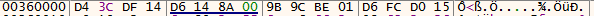
Wait, let’s check the resource section of this sample that we looked at before:

They match! hmm:
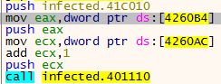
Before the call to that dynamic variable at dword_4260B4 we see that another DWORD is being used located at dword_4260B4(passed to EAX). if we look at dword_4260AC in disassembler view it doesn’t look like valid code:

So this little invocation at 0x40180E to sub_401110 gives me a hutch that it might lead to a decryption of that entire resource.
dword_4260B4 holds value of 0x8BB9 and if we view the resource length that was mapped into dword_4260AC we can clearly see they have the same size!

I decided to rename the variables and jump pass the call sub_401110(func_ResourceDecryptionRoutine) :
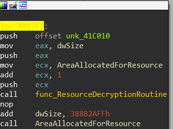
To see what will happen to the resource section that was mapped into memory I decided to place hardware breakpoints on dword_4260AC to check for memory access, after my hardware breakpoints got triggered the allocated resource view in disassembly turned into this:

Awesome!
So let’s enter the rabbit hole and see where it leads us, but before we do that - let’s dump this into memory to see what’s going exactly:
IDA view of dumped shellcode:

I’ve analyzed the dump a bit, and found that the function called at offset 0x33 is where the main execution happens but unfortunately it looks like this:
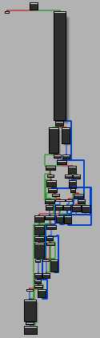
Let’s scroll around the IDB to see if we can find some interesting anomalies:
Our first encounter is at code block loc_4C:

Trick number 1 - Stack Strings
This again looks like stack strings, and they all contain a call right after the push. If we’ll attempt to parse these strings manually and turn them into ASCII strings we can find something really interesting:

First it appears to load kernel32.dll and call [ebp-28h], Then we see a push to VirtualAlloc and a call to [ebp-60h]. Each time a new function string is pushed, [ebp-60h] is called. I have reason to suspect that [ebp-28h] is the address of LoadLibraryA and [ebp-60h] is the address of GetProcAddress, we’ll map this assumption into IDA:

This mapping actually aids us to recover more artifacts from just looking at the the dumped memory statically:
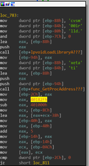
Let’s debug this memory dump and see if we’re correct:

Our assumptions are indeed correct!
Trick Number 2 - Handling Dynamic API calls in IDA:

So we have this issue, The base address of TerminateProcess is going to placed in [ebp-0ACH] as we can see on the last line(I’m assuming you guys know that in the stdcall convention, the return value is returned in EAX and that you know what GetProcAddress does). We can’t go and manually map each and one of these by clicking K on each local variable like some potato, we must edit the function so that IDA will know that any time the EBP register is being access using offsets its actually accessing local variables so let’s tell IDA it’s an EBP based function:

Let’s click edit function and mark the function as EBP based:
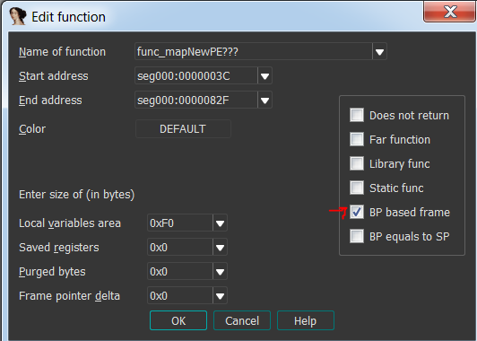
Now we can rename all the local variables and see the changes get applied all across the IDB! So let’s fix the dynamic API resolving local variables and keep searching for anomalies. I didn’t find anything worthwhile so I decided to place a breakpoint on VirtualAlloc and see what happens and indeed we broke on offset 0x1B8:
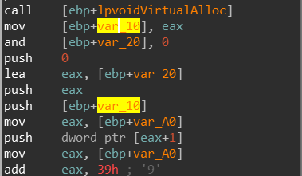
I’ve access the dump of the newly allocated memory which is passed into var_10.
Let’s set up a hardware breakpoint on the first DWORD of the allocated memory and see if it gets accessed:

Trick number 3 - Dumping PE files from memory:
It does, and with a promising MZ signature that might indicate that a new file is being mapped, now we have to be careful here because I only set a breakpoint on the first DWORD of 0x1EB0000 - if we execute another time we will lose control over the malware, When I did that by accident the malware began to start an infinite amount of threads to circumvent our analysis and crash the vm!
We are currently executing at offset 0x9B2 inside sub_978 and if we look in IDA at how complicated this function is we’ll have to collect our jaw from the floor:

Let’s assume the MZ signature is no coincidence and a PE file is being mapped into memory, maybe if we find where this loop end and break there, we might successfully map the file entirely and then we can dump it!
sub_978 ends at loc_BBA:
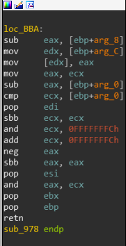
so let’s set up a breakpoint there and see what happens:
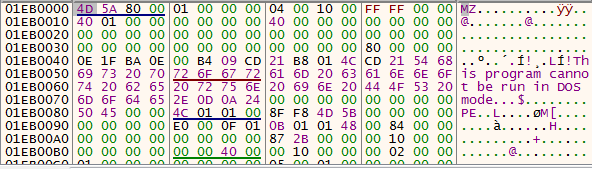
We were correct!
Before we continue execution let’s dump this PE using Scylla and see how IDA will parse it:
I have seen this before, but only in books. This anti disassembly at its finest. It attempts to trick IDA’s disassembler by creating these faulty jump instructions that will just into the middle of other parsed instructions - IDA doesn’t know how to deal with this so it will begin parsing instructions incorrectly. We will deal with this later as we are not done with the first binary.
Trick number 4 - Self Loading, [heavy waves of nostalgia intensifies]
Let’s go back to x64dbg, after we leave the mapping function we are supposed to land at offset 0x1E0. Our next anomaly will be met at location 0x1F8 where a VirtualProtect call is being made:
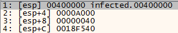
On the base address of the main image? what?
If we execute the call, the .text section which is responsible for storing the code of the PE file has its memory protection changed. It can now be Read from, Executed and WRITTEN TO, that is not supposed to happen! let’s see what happens next:
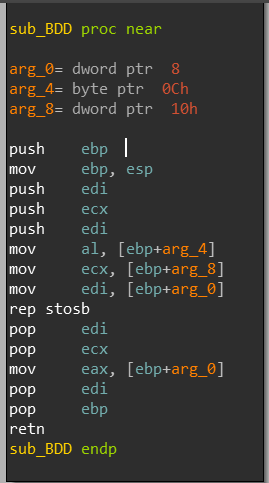
We enter a sub_BDD and if we view the functions behavior in the debugger, we can see that rep stosb instruction will begin to copy the zeroes stored in AL to replace the value of addresses pointed by EDI. EDI is pointing to the code section of the main sample! It’s rewriting its own code section wow!
It’s gone!
I’m going to assume that the malware will copy the newly mapped PE into the code section of the current executing binary. let’s see if our assumption is correct.
When we exit the function sub_BDD we land at offset 0x220:

If we keep stepping over instructions we begin to see the string “.text”, which gives me a hutch that we’re are traversing through the PE Header format of the current executing binary and come to think of it, if we look at offset 0x22c we see:

And I know that 3Ch is the e_lfanew field in the PE File header format, hmm… Lets trying to map this in IDA and see if this assumption makes any sense:

It’s actually traversing through the newly mapped PE file!
I mapped it and now will explain how this entire process is done:
mov eax, [ebp+lpvoidVirtualMemory]
mov [ebp+lpVoidNewMappedPE], eax
mov eax, [ebp+lpVoidNewMappedPE]
mov eax, [eax+_IMAGE_DOS_HEADER.e_lfanew] ; Get the value of e_lfanew
mov ecx, [ebp+lpvoidVirtualMemory] ; Get Image base of the newly mapped PE
lea eax, [ecx+eax+4] ; Access IMAGE_NT_HEADERS by adding e_lfawnew to the image base of the newly mapped PE
mov [ebp+_IMAGE_NT_HEADERS], eax ; Save the address of _IMAGE_NT_HEADERS of the newly mapped PE
mov eax, [ebp+_IMAGE_NT_HEADERS]
movzx eax, [eax+IMAGE_FILE_HEADER.SizeOfOptionalHeader] ; Get the size of _IMAGE_OPTIONAL_HEADERS from the newly mapped PE
mov ecx, [ebp+lpVoidNewMappedPE]
mov ecx, [ecx+_IMAGE_DOS_HEADER.e_lfanew]
lea eax, [ecx+eax+18h] ; Skip to the first section of the newly mapped PE
push [eax+_IMAGE_SECTION_HEADER.PointerToRawData] ; Push the address of the first section of the new mapped PE
push [ebp+lpVoidNewMappedPE] ; Push the Image base address of the newly mapped PE
push [ebp+lpvoidBaseAddressOfCurrentPE] ; Push the base address of the current PE
call sub_BF6
Now let’s make another assumption - after the call to sub_BF6 at offset 0x21B the code section of the current PE will be replaced with the code section of the new mapped PE.
And that is incorrect! Fortunately I put a hardware breakpoint on the the code section of the current PE before I continued execution and the copying actually occurred at offset 0x326 instead of 0x21B BUT with a call to sub_BF6 so I was kinda right :), so let’s put a breakpoint at the return instruction out of this function and see what happened to the code section:

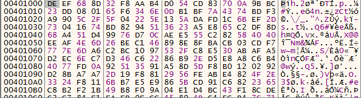
Very cool, but this code looks really strange because if we view it in disassembly it looks nothing like what we dumped to IDA before:
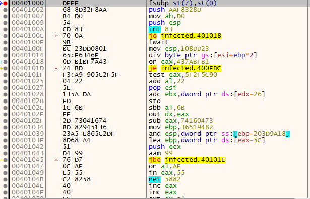
Let’s keep going to see if it might change. Our next anomaly is at offset 0x358:


The newly mapped PE gets free’d from memory, alright this is promising let’s see what happens afterwards.
The last anomaly that occurs is at the bottom of the function we encountered when we started analyzing this shellcode(sub_3C):

A call to atexit:
“Processes the specified function at exit.”
int atexit(
void (__cdecl *func )( void )
);
This function will execute a callback function that will trigger when the process will exit.
So what was the last value pushed into the stack?

It’s an address, lets follow it:
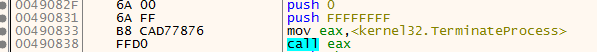
It’s going to terminate itself upon function exit, alright but is that it? well, not exactly… at location loc_811:

We jump to a different shellcode located inside the code section of our PE:
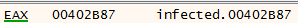
Let’s look at the newly mapped PE that we dumped in IDA at this location:

We compare it to the address stored in EAX:

{kind=link}
{kind=link}
{kind=link}
{kind=link}
{kind=link}
{kind=link}
Ah, this explains the reason we saw garbage code when we looked at it when it was first mapped to the code section, its because the address of entry point of this code section is actually at offset 0x2B87!
Alright, let’s stop for a second and take a breather.
Summary:
In this small blog we covered 5 neat techniques:
- Resource embedded code
- Stack strings
- Dynamic API Resolving
- Loading PE files dynamically
- Self loading code
Again, sadly - I’ll have to break this post into two parts since it already become to long but I hope this helped and aided your analysis toolkit. On the next part we’ll be analyzing the dumped PE file and circumventing it’s anti reverse engineering tricks.
Till next time!